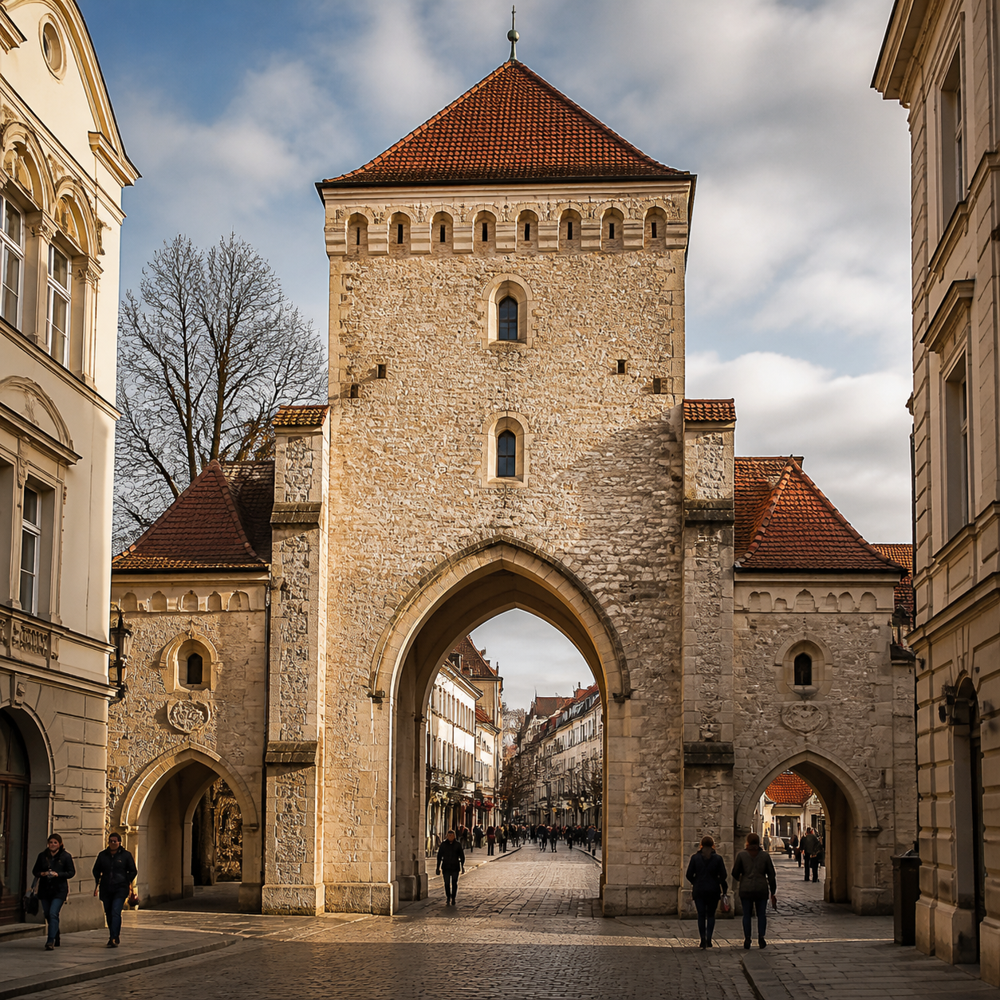
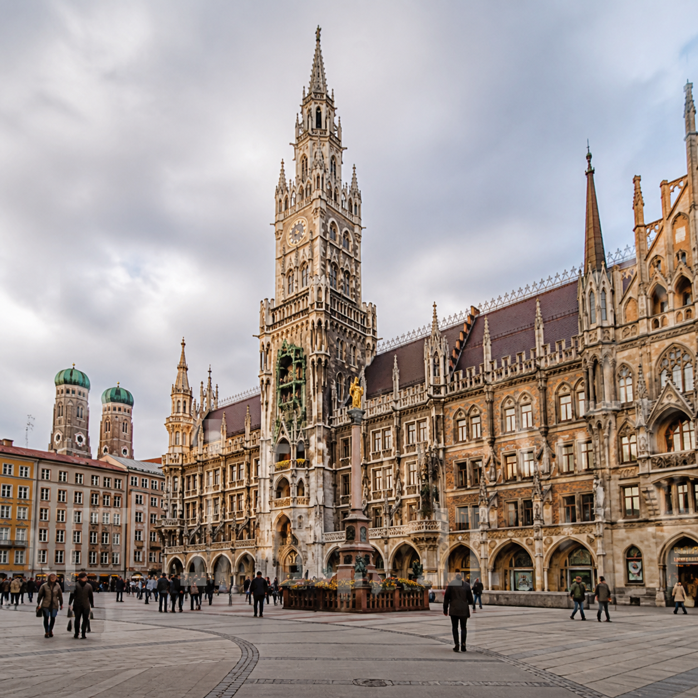
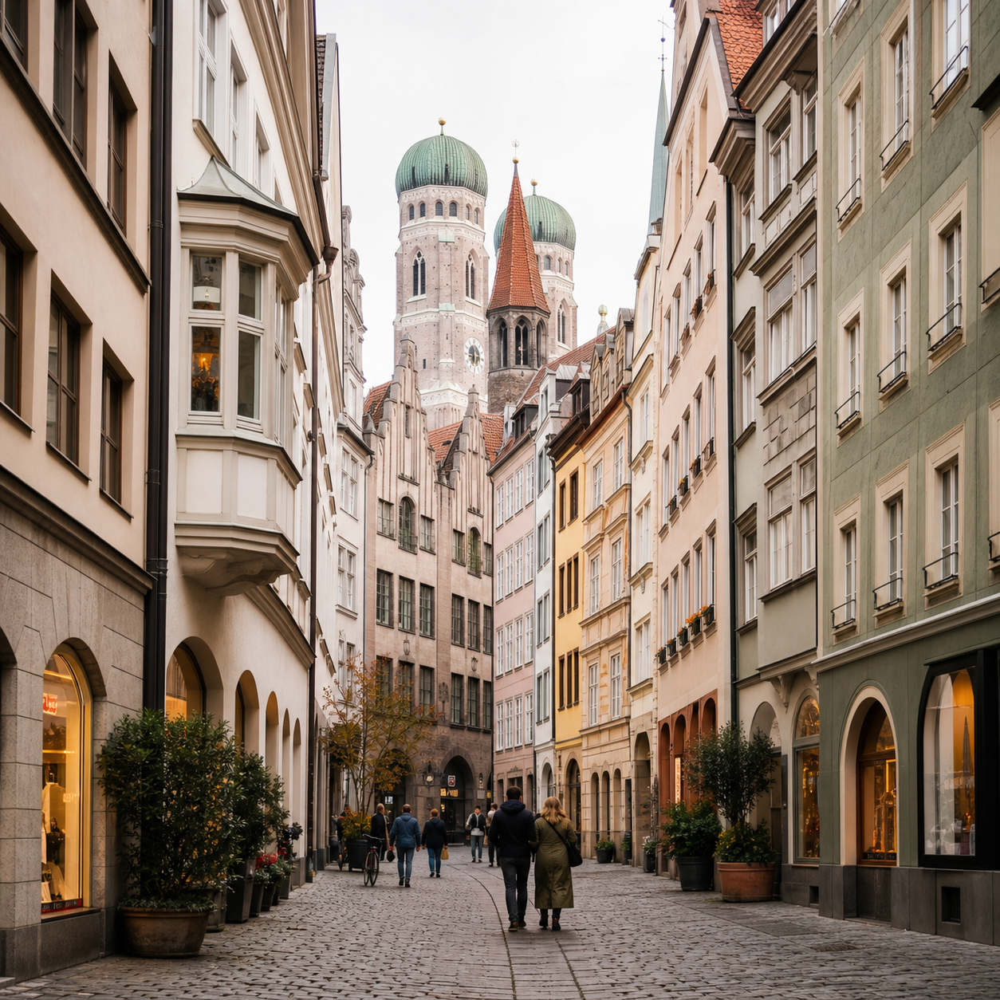

rramingo
Н
поездка завершена · 12–20 октября
Мюнхен с семьёй
Фотоальбом
Все воспоминания — в порядке путешествия
⌕ Поиск по дате или месту
18 октября
Суббота · 12 фотографий
Вечер в старом городе18:17 · Мюнхен

Мариенплац17:42

По дороге домой16:08
Узкие улочки15:36
Старинная архитектура15:02
17 октября Пятница · 8 фотографий
Центр · 16:22
Вечер · 17:03
Прогулка · 17:40
Старый город · 18:05
Площадь · 18:16
В пути · 18:47
rramingo
Н
ПУТЕВОЙ ДНЕВНИК / ВЫПУСК № 04
Мюнхен с семьёй
Германия · 18 октября · глава третья
Вечер
в старом городе
Золотой свет, тихие улочки и день, который закончился совсем не по плану.
01 / день третий
Медленный день
без расписания
Оставили карту в отеле и просто пошли туда, куда вела улица. В итоге нашли самую красивую площадь и семейное кафе.
МЮНХЕН · 18 ОКТЯБРЯ
Город просыпается
Дорога к площади
Тёплый вечер
02 / маленькая находка
Архитектура
на каждом углу
Тут даже короткая дорога за кофе превращается в отдельную прогулку.
Башни над крышами
Старый город
Без спешки
rramingo
Н
АТЛАС ПОЕЗДКИ · 12—20 ОКТЯБРЯ
Мюнхен с семьёй
Места и моменты
32 кадра · 4 места · маршрут 86 км
✦ Маршрут поездки
Старый городИзарМузейный квартал12
08
12
место с фото— маршрутвыберите точку